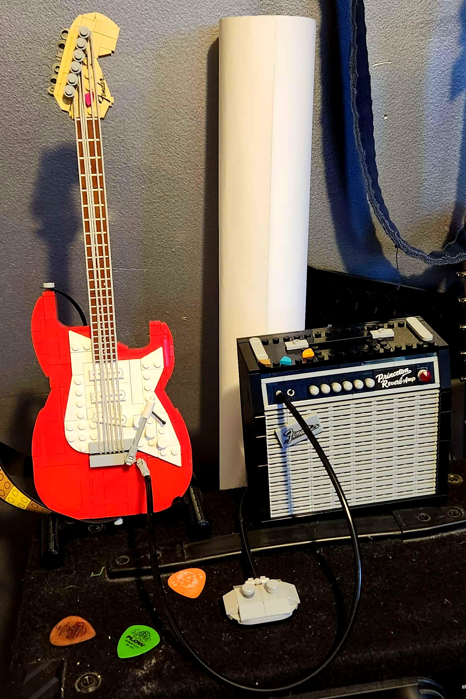

Home
Hayden Coble is a CS student at Athens State University expecting to graduate Fall 2024. He is also a tutor in the MCNS Learning Lab on campus. His schedule can be found in the table below
| Monday | Tuesday | Wednesday | Thursday | Friday |
| 5:00 - 9:00 | 5:00 - 9:00 | Unavailable | 10:00 - 2:00 | 10:00 - 2:00 |
During his time in school and on the internet in his own time, Hayden has learned a number of things about programming. His first program was written in JavaScript in a high school programming class offered at the Limestone County Career and Technical Center. In that class, he learned to build a website in HTML and even received a certification in HTML5 and CSS (although he is very rusty on it). He also made a videogame in that class: Solar Defense - Pilots From Pluto. The game was influenced by Galaga and Asteroids, and was made in Game Maker Studio. He made this game with a partner from the class; he wrote most of the code and music while his partner made the art for the game. At the state level, the game won first place in Video Game Design at the SkillsUSA Alabama conference.
Now, Hayden is most experienced with C++ programming but has recently started to strengthen his SQL and Python for a personal project of his own. He has also had a bit of experience with many other languages for assignments here and there, some older than his parents. Most recently, he's taking CS307 to relearn HTML and Web Development!
Skills
- C++ Programming - Experienced
- Python Programming - Intermediate
- SQL Programming - Intermediate
- C Programming - Novice
- C# Programming - Novice
- Unity Development - Novice
- Linux
- Advanced Topics in Mathematics
Interests
Hayden is very interested in technology and music, and of course, music technology. If you'd like to know more, he encourages you to click the image below.
Contact
Hayden can be contacted by phone or discord, but he doesn't like to share that information
with everyone. It is best that you contact him via e-mail and earn his trust first.
E-mail: hcoble@my.athens.edu